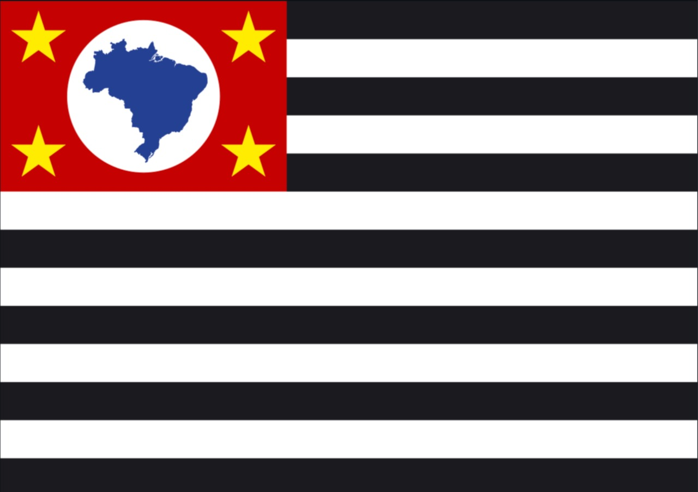

Estados e algumas capitais
Rio Branco

Rio Branco é a capital do estado do Acre (AC).
Área territorial: 8.835km²
População: 350mil habitantes.
Curiosidade: “Capital da Natureza”, em razão dos seus atributos naturais.
São Paulo

São Paulo é a capital do estado de São Paulo (SP).
Área territorial: 1.521km²
População: 12 milhões de habitantes.
Curiosidade: “Maior cidade do país,” é considerada uma metrópole mundial brasileira.
Maceió

Maceió é a capital do estado de Alagoas (Al).
Área territorial: 509,6km²
População: 1.012.387 habitantes.
Curiosidade: “Muito procurada pelos turístas nos meses de verão”, centro financeiro, social e cultural de Alagoas.
Macapá

Macapá é a capital do estado do Amapá (AP).
Área territorial: 6.407km²
População: 493.634 habitantes.
Curiosidade: “A única que não faz ligação com outra capitais”, por meio de rodovias.
Manaus

Manaus é a capital do estado do Amazonas (AM).
Área territorial: 11.401km²
População: 2 milhões de habitantes.
Curiosidade: “Situada no centro da floresta amazônica.”
Salvador

Salvador é a capital do estado da Bahia (BA).
Área territorial: 693,8km²
População: 2,7 milhões de habitantes.
Curiosidade: “Foi a primeira capital do Brasil.”